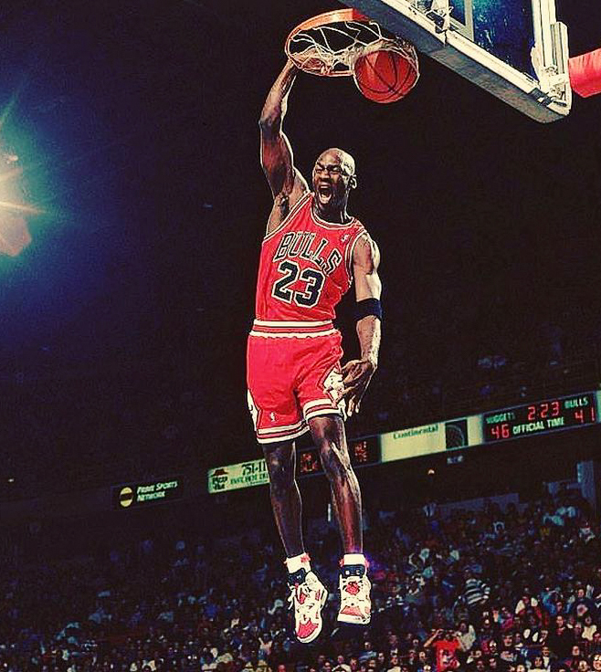
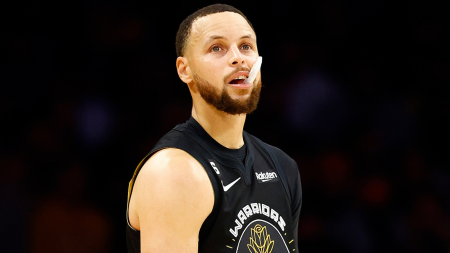
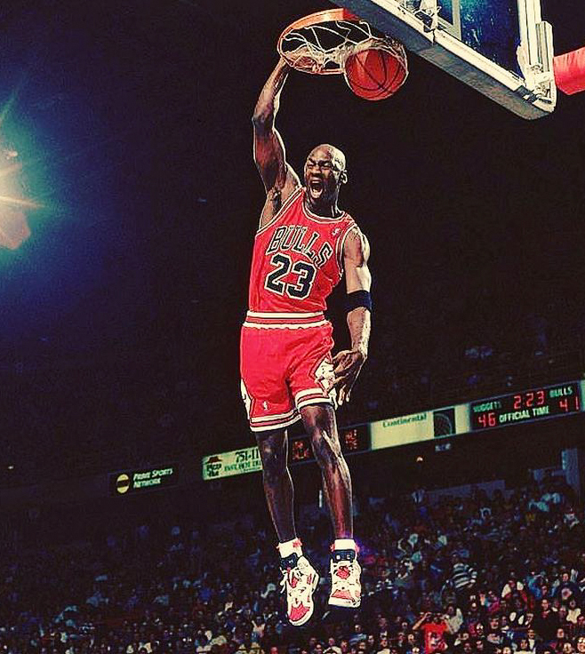
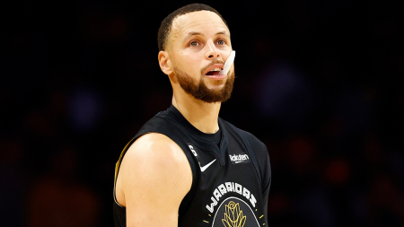

Краткая информация о сайте
Ресурс представляет собой набор случайных фактов, новостей и полезных ссылок о североамериканском и европейском баскетболе.
С течением времени содержание и наполнение будет расти. Следите за новостями!
 



Я могу объяснить всем, как нужно играть в баскетбол. Вот только никто так не сможет
Майкл Джордан
..ee$$$$$ee..
.e$*"" $ ""*$e.
z$"*. $ $$c
z$" *. $ .P ^$c
d" * $ z" "b
$" b $ 4% ^$
d% * $ P '$
.$ 'F $ J" $r
4L...........b....$....$...........J$
$F F $ $ 4$
4F 4F $ 4r 4P
^$ $ $ b $%
3L .F $ 'r JP
*c $ $ 3. z$
*b J" $ 3r dP
^$c z% $ "c z$"
"*$L $ .d$"
"*$ee.. $ ..ze$P"